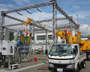

計器サービス事業部は、計量法で定められた取引用電力量計の検定申請などの代行、電力会社様のスマートメーターのセットアップ（ユニット式計器の組込み）、関西一円のご家庭や工場の電力量計の取替工事、特別高圧計量装置（2万ボルト以上の高い電圧で電気供給を受けておられるお客さまの電気使用量を計る装置）の工事・保守などを担当しており、お客さまに信頼頂ける業務遂行に努めております。
（１）スマートメーターのセットアップ
通信機能をもったスマートメーターのセットアップ（ユニット式計器の組込み）業務を行っています。
（２）検定代行業務
計量法上必要な取引・証明用電力量計の日本電気計器検定所(JEMIC)への検定申請の代行業務(検定代弁)を行っています。
（３）電力量計取替工事
計量法の規定に基づき制定された計量法施行令に定められた期間内（10年に1回など）に、お客さま宅の電力量計を取り替えて正確に電力量を計量できるようにする業務で、毎年約100万件の取替工事を実施しています。計器の取替工事を行う拠点として関西地域に18ヶ所があり、約200名の工事員により計器取替工事を実施しています。
（４）特別高圧計量装置の工事・保守
2万ボルト以上の高い電圧で電気供給を受けておられるお客さまの電気使用量を計る装置の新設工事、取替工事、保守点検を実施しています。
（５）高圧・特別高圧受電設備の保守・点検・改修工事
大きなビルや工場で使用されている高圧・特別高圧受電設備の保守点検を電気主任技術者様の指揮監督の下、点検する業務、ならびに、技術基準に抵触する設備や老朽した設備の改修工事も実施しており、電気設備の信頼度を維持し、お客さまに安心して電気をお使いいただくための業務です。
スマートメーターのセットアップ作業
スマートメーターへの
取替作業

特別高圧計量装置の
工事
当事業部の特徴は、年間150万個のスマートメーターなどの検定申請代行、セットアップ（組込み）、そして、お客さま宅に伺って年間100万軒の電力量計の取替工事をさせていただくなど、お客さまとの接点が多く、従事する従業員も約400名と多いことです。
一人ひとりの仕事、作業そして行動が、確かな信頼の源となります。お客さまの目線を決して忘れず、人を大切にして、弛まぬ努力を積み重ねていきたいと考えています。
計器サービス事業部長